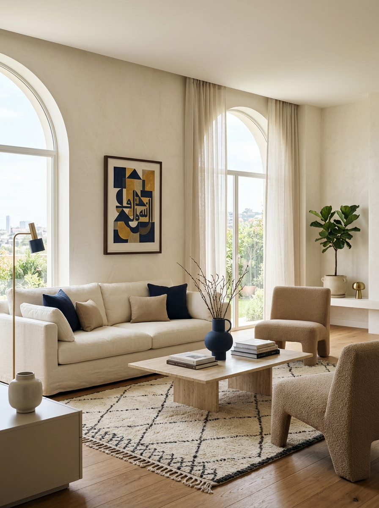
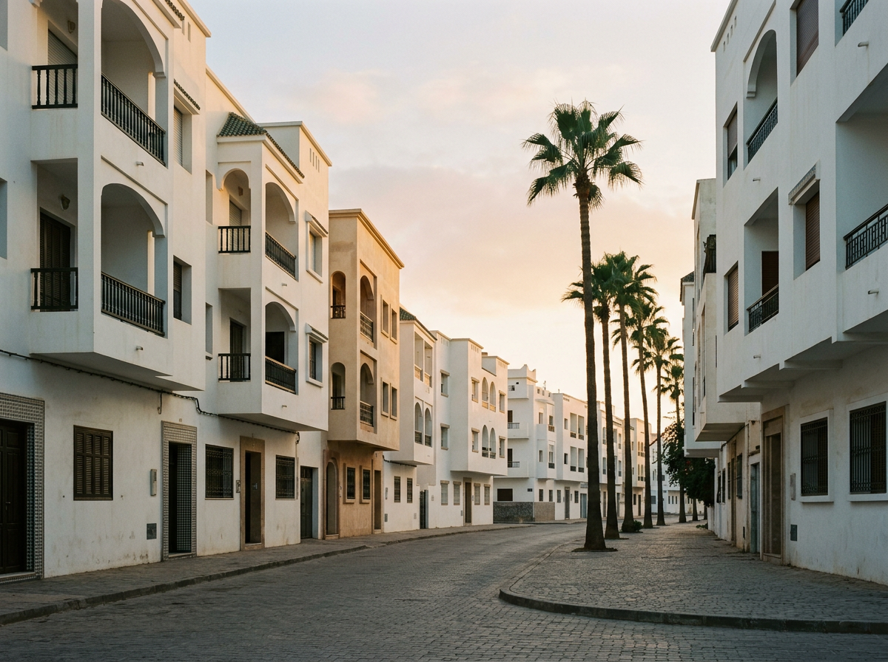
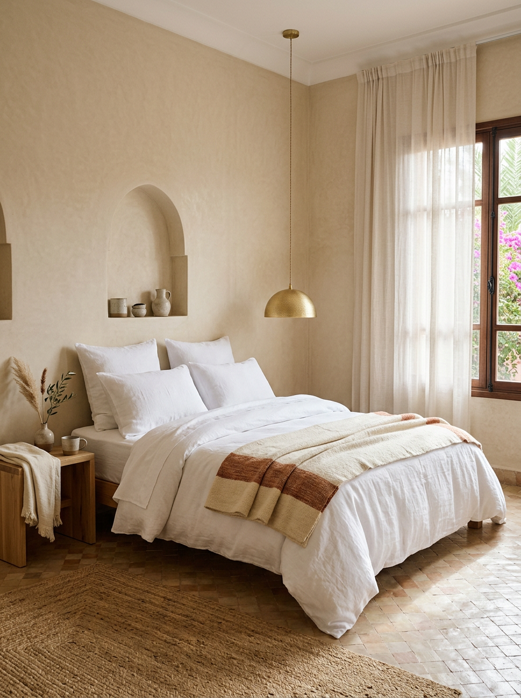

Une gestion rigoureuse pour votre location courte durée à Kénitra, Salé et Rabat. Pilotage depuis Paris, relais local sur place. Un interlocuteur clair, un suivi méthodique, des décisions partagées.

Depuis Paris, nous orchestrons la gestion quotidienne de votre bien : réservations, communication voyageurs, optimisation tarifaire, reporting propriétaire et points réguliers. Vous bénéficiez d'un interlocuteur unique, joignable et organisé.
Sur place, un relais de confiance assure les check-in et check-out, la coordination du ménage, les vérifications du logement et toute intervention nécessaire. Une présence locale, calme et professionnelle, qui connaît la ville et ses prestataires.
Une compréhension fine de Kénitra, Salé et Rabat : quartiers, profils voyageurs, dynamique saisonnière, prestataires fiables.
Une présence physique permanente à proximité du bien, pour intervenir rapidement et accueillir les voyageurs dans de bonnes conditions.
Un pilotage organisé depuis Paris : outils clairs, processus posés, suivi régulier. Une rigueur qui se voit dans le quotidien.
Un interlocuteur dédié, des échanges réguliers, des réponses précises. Pas de zones floues, pas de promesses tenues à moitié.
Une attention au détail dans la préparation du logement, la communication voyageurs et la qualité de l'expérience.
Un accompagnement pensé pour celles et ceux qui ne vivent pas sur place. La délégation devient simple et lisible.

Notre base. Une connaissance approfondie des quartiers résidentiels, du centre, et des attentes des voyageurs qui choisissent la ville.
Gestion locative pour les biens situés à Rabat : clientèle d'affaires, séjours culturels, séjours longs. Un standard adapté à la capitale.
Une présence régulière à Salé pour les propriétaires qui souhaitent louer dans une ville à forte identité, proche de Rabat.

Confier son bien à distance demande de la clarté : des points réguliers, des décisions partagées, une présence locale à laquelle se référer. Nous adaptons nos échanges au décalage horaire et à votre disponibilité.
Une discussion pour comprendre votre bien, vos objectifs et votre situation. Sans engagement.
Évaluation du potentiel locatif, recommandations sur la mise en valeur, projection raisonnée.
Préparation du logement, création des annonces, paramétrage tarifaire, briefing du relais local.
Suivi quotidien, points réguliers, reporting transparent. Vous gardez la maîtrise, nous gérons l'exécution.
Un échange direct pour mieux comprendre votre situation, votre logement et vos attentes. Nous vous proposons ensuite un audit clair, écrit, sans pression commerciale.